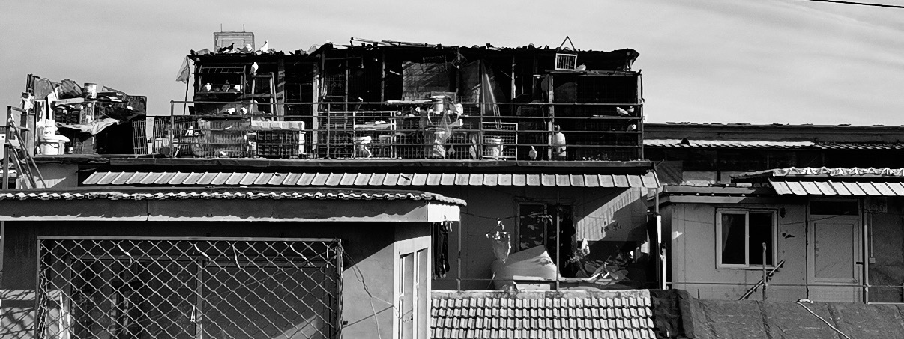
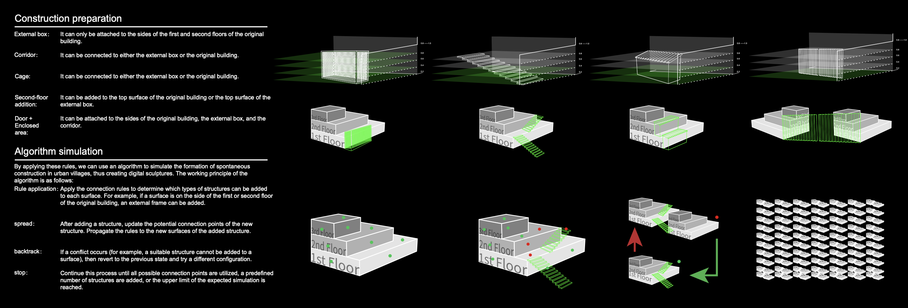
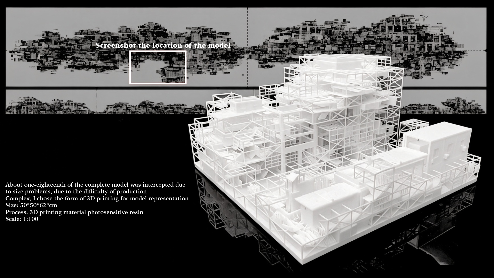

The Self-Organizing
Regeneration of Urban Areas
The work views the phenomenon of urban villages as a form of collective wisdom, an instinctive design, and a sculpture. It places this phenomenon within the contexts of “phenomenon,” “art,” “behavior,” and “manifesto,” rethinking it from a new perspective. It argues that urban villages should be reinterpreted and extended as a form of sculpture and artwork, reconstructed in a more “exaggerated” state to provoke a renewed reflection on “instinctive creation” and the “degradation of creative instinct.”

Standardized products are mediocre placebos, and elitism and class are the killers of “creative nature.”
A large amount of design is completed through a cycle of trial, failure, and retrying, as we are always waiting for a “happy accident.”
Design Background
Instinctive creation, everyday objects, and spontaneous construction.


Instinctive Creativity
We may experience such a behavioral pattern every day: using a dishcloth to pad under a hot soup pot to prevent scorching the table; using the paper sleeve from chopsticks as a temporary chopstick rest; even using the bottom of a bowl as a makeshift sharpening stone; cutting old T-shirts into strips to tie things up; clamping clips on the edge of a cabinet to hang light items; or using the width of a finger or the length of a foot as rough measurement units.
This is human instinctive creativity. The pattern of such creative behavior includes having a clear purpose, combining or using available objects at hand, and completing the task quickly.
Degraded Creative Instinct
Such small acts of instinctive creativity are gradually being eroded by the products of the industrial age and the consumerist sugar coating that surrounds them. Producers and designers continuously seek out gaps in our lives, wrapping them in shells that are either sentimental, high-quality, futuristic, or historical, creating textured placemats, heat-resistant natural stones, Zen-inspired chopstick rests, or obsidian-like dark and weighty pebbles.
As a result, you no longer have the opportunity to use your intuition to create those small, personal objects, your own secret recipes.
Spontaneous Construction as Instinctive Creativity
“Spontaneous construction as instinctive creativity” is the translation of spontaneous construction in urban villages undergoing city renewal. It can be seen as an instinctive form of human creativity, embodying the essence of collective wisdom and instinctive creation. These spontaneously built spaces are often based on the actual needs of residents and the resources available to them, solving problems quickly and flexibly, and demonstrating the human ability to create under limited conditions.
However, this instinctive creativity is often viewed as “non-compliant” in the wave of urbanization and faces pressure from demolition and renovation.

Research Process
Field research in Beijing and a classification of spontaneous building units.
Hongsi Village, Beijing
For the research topic, I chose to focus on the issue of spontaneous construction in Beijing’s urban villages, specifically selecting Hongsi Village in Xiaohongmen, Chaoyang District, Beijing, located at the intersection of South Fourth Ring Road and Liangshui River, as the research site. Hongsi Village is situated west of China’s highest petition office, which has led to a significant influx of people from other regions coming to handle their affairs. Over time, Hongsi Village has become one of the largest urban villages in Beijing.

Field Research
We conducted on-site visits to collect data on all instances of spontaneous construction in the surrounding area, including Xiaocun. A total of over 2,000 spontaneous construction units were identified. We selected image samples of these units that were not attached to original buildings for statistical analysis and further study.


Five Types of Spontaneous Units
We conducted a statistical analysis of the spontaneous construction units and categorized them into five types: “External Boxes,” “Second-story Additions,” “Corridors,” “Cages” (for pigeon keeping), and “Doors + Enclosed Areas and Spaces.” We also studied the patterns and rules governing their combinations.
- External Boxes
- Second-story Additions
- Corridors
- Cages (for pigeon keeping)
- Doors + Enclosed Areas and Spaces
Technical and Professional Studies
From field observations to growth-center analysis and generative rules.
Growth Centers and Simulation
Through on-site surveys and computer simulations, we determined the growth centers for each type of unit in the region, based on local sample data. According to the growth environment defined for one to three layers, the number of available niches for growth is approximately 14,000.


Core Principles of the Algorithm
The core principle of the algorithm is to dynamically reduce the range of candidate objects for each seat until all seats are occupied by suitable objects. The process of dynamically reducing the candidate object range is achieved through constraint rules, propagation, and backtracking.

The algorithm works as follows:
Initialization:
Start with the original building as the base structure.
Each face of the original building and any added structures is considered a potential connection point.
Rule Application:
Apply the connection rules to determine which types of structures can be added to each face.
For example, if a face is on the side of the first or second floor of the original building, an external box can be added.
Propagation:
Once a structure is added, update the potential connection points for the new structure.
Propagate the rules to the new faces of the added structure.
Backtracking:
If a conflict arises (e.g., no suitable structure can be added to a face), backtrack to a previous state and try a different configuration.
Termination:
Continue the process until all possible connection points have been utilized or a predefined number of structures has been added.

Outcome Presentation
The outcome is a generated landscape in which accumulated individual interventions become an architectural sculpture. By applying these rules, the algorithm simulates the formation of spontaneous construction in urban villages, creating a digital sculpture.

